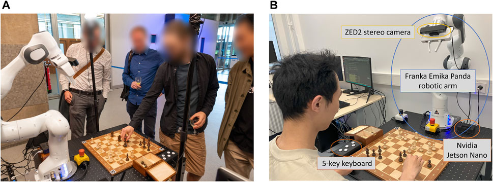

Successes
For real life success in this field, there have been a few attempts at the idea of creating a low-cost chess-playing robot. [1] For one such team from Vietnam led by Truong Duc Phuc, they sought to make a machine that could be made as cheap as possible, noticing that many of the high-end machines cost around thousands of dollars to create using the most advanced sensors and finely made mechanical components for arms. For their attempt, they have managed to create a robot for about $100 using nothing more than a phone camera and a laptop computer for computer vision with the phone on a mount viewing the board from a fixed position. In order to recognize the board, the team utilized methods such as the Hough transform and a hybrid edge and morphology. Alongside it was a Feature Pyramid Network which would allow the system to better recognize the pieces under various conditions, such as varied lighting or when pieces were obstructed, overall yielding a 91.6% degree of accuracy. Aside from the vision, the system had a specially made robot arm for manipulating pieces. The laptop computer would serve to process the images and for decision making.
[2] Another team from the Netherlands would make an attempt at a chess-playing robot with the idea being that it could be open-source. Unlike the other team, their system utilized a specialized camera which could capture depth. [3] Using the method demonstrated by Wolflein and Arandjelovic, the speciality camera was used in order to create a 3D representation of the board and pieces, such that the system can utilize it for the movement of the robotic arm. The robotic arm this time, is more of a general purpose arm with 3D-printed grips which allow it to better manipulate the chess pieces.